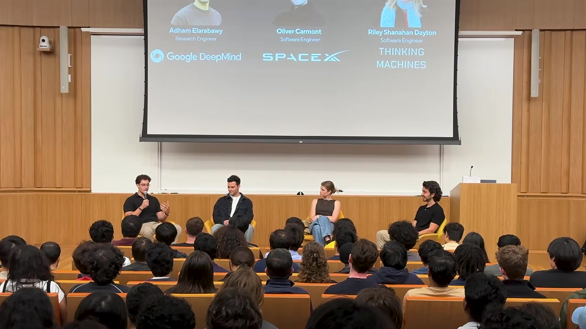
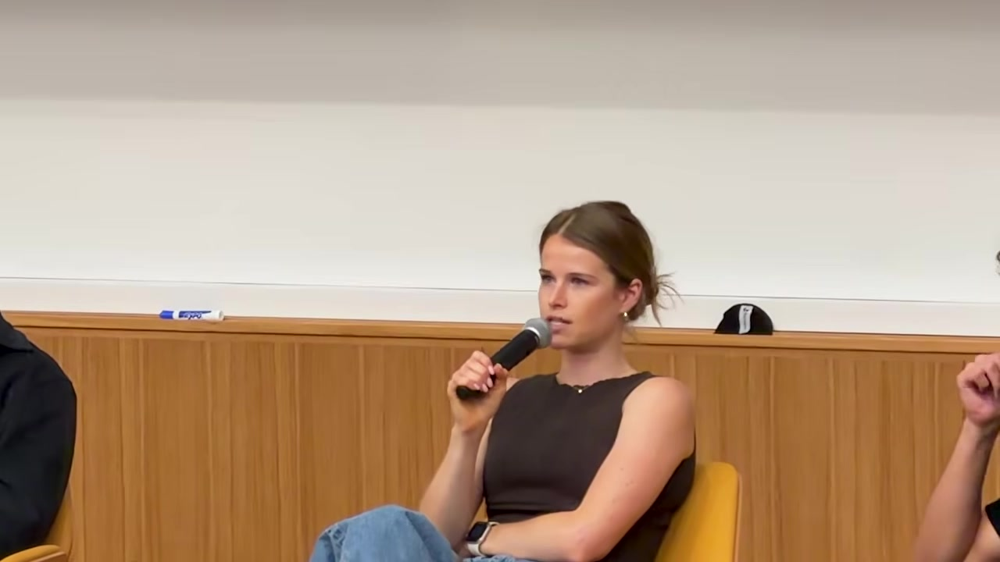
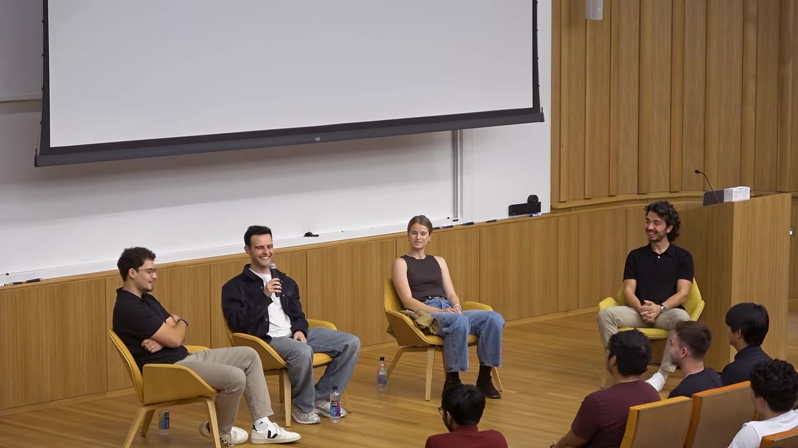

Evidence boundary
This is career experience, not an official hiring rubric
The panel features three UC Berkeley alumni: Adham Elarabawy, a research engineer at Google DeepMind; Oliver Carmont, presented as a Cursor engineer following its move into the SpaceX organization; and Riley Shanahan Dayton, a software engineer at Thinking Machines Lab. They describe their own paths, failures, and preferences.
Their advice is useful because it is concrete, but it reflects a highly selective sample: Berkeley graduates working in the Bay Area during an unusually fast AI market. It is not a promise that side projects, hundreds of applications, hackathons, or product usage will produce the same outcomes for everyone. It also does not represent the formal hiring policy of any named company.
Reuse the mechanisms that fit your situation: create credible evidence, learn through real feedback, build authentic relationships, and expand opportunity. Do not copy the logos, hours, or career sequence as a universal formula.
Executive summary
Proof of agency compounds more reliably than credential chasing
All three panelists took different paths. Riley learned from a failed healthcare AI startup, spent almost four years building AI data products at Hex, then moved closer to research by joining Thinking Machines Lab. Oliver used hackathons and deep product use to move from Amazon and Apple internships to Vercel, then Cursor. Adham moved through Formlabs, Scale AI, and Harvey before becoming a research engineer at DeepMind without a PhD.
The common mechanism is more interesting than the company names. Each person accumulated evidence that made later conversations easier: a robot dog that proved Adham could build across hardware and software; repeated hackathon projects that made Oliver fluent in Vercel and Cursor; a community computer-science program that created Riley's relationship with Google; and peers who later recruited one another across companies.
- Build something real from genuine interest. The project does not need to be novel; it must make effort, taste, and follow-through visible.
- Use internships as two-way experiments. Test team size, scope, feedback speed, management, and the work you actually enjoy.
- Do not self-reject. Widen the surface area for opportunities, then choose from the options reality gives you.
- Optimize for people and learning, not only brand. Peers may matter more over a decade than a transactional search for senior mentors.
- Failure carries product knowledge. Excellent technology still fails without deployment, distribution, user workflow, timing, and execution.
- AI raises the value of judgment and initiative. Coding becomes easier to access, but deciding what to build and understanding a domain remain scarce.
Three paths
Different careers, similar evidence loops

Healthcare AI startup → Hex → Thinking Machines Lab. Values small teams, customer impact, and becoming load-bearing across research and product work.
Amazon and Apple internships → Vercel → Cursor. Hackathons and sustained product use built both technical fluency and strong opinions about the products he later joined.
Formlabs → Scale AI → Harvey → Google DeepMind. Repeatedly followed ambitious projects and maximized the number of paths that could turn into an opportunity.
Standing out
A project becomes valuable when it proves how you behave
Adham spent several months during the pandemic 3D-printing parts, buying servos, and building a walking quadruped. Similar projects already existed online, so novelty was not the point. The finished object demonstrated that he was intrinsically interested, could cross disciplinary boundaries, and would persist through physical debugging. He could trace much of his interview history back to that one month-scale investment.
Oliver's proof was repeated practice. Hackathons forced him to ship under time pressure with tools such as Next.js and Vercel. By the time Vercel asked him to build an application, the task was familiar. Later, being a top Cursor user at Vercel gave him product-specific insight and credible feedback before his Cursor interview.
Riley combined persistence with community work. As a freshman she tracked companies from billboards and applied broadly until the New York Times hired her as its youngest intern. Separately, she created a computer-science program for under-resourced schools, cold-contacted Google, obtained 80 laptops, and taught roughly 100 students. The relationship with Google grew from meaningful work, not from asking for a referral first.
Choose a problem that remains interesting after the novelty fades.
Ship a product, program, experiment, or contribution people can inspect.
Put it in front of users, teammates, judges, or maintainers.
Turn repeated use and failure into specific technical judgment.
Interviews and relationships become a consequence of visible work.
Can another person see what problem you chose, what you actually built, what failed, what users changed, and what you now believe? A repository title without this story carries much less signal.
Choosing the environment
Big tech, startups, and graduate school optimize different loops
The panel rejects one universally correct next step. Oliver learned through internships that he wanted faster feedback and proximity to a company's center of gravity. Riley wanted to be load-bearing, move between research and product, and fail where recovery was possible. Adham emphasizes that the world is too uncertain to decide an exact destination in advance; generate options, make contact with real work, and update quickly.
| Environment | What it can teach | Likely trade-off | Question to ask |
|---|---|---|---|
| Large technology company | Scale, mature engineering practice, and how durable organizations operate. | Narrower scope, more process, and distance from the center of gravity. | Will the manager and team expand my ownership? |
| Startup or smaller team | Speed, ambiguity, broad ownership, and direct customer feedback. | Volatility, weak structure, and a higher chance the company fails. | Do I trust the people, mission, and learning even if equity goes to zero? |
| Graduate school | Depth, research methods, and sustained focus in a field. | Longer feedback loops and opportunity cost. | Is there a research question I genuinely want to pursue? |
Internships are therefore not auditions only. They are low-cost tests of the environment. Ask whether you enjoy the daily work, whether the people push you, whether the manager invests in your growth, and whether your output reaches users. A return offer is useful; knowing that you do not want the environment can be equally valuable.
The non-PhD route
Adham did not target one perfect path into DeepMind
Asked how he reached a research-engineering role without a PhD, Adham does not present a hidden credential hack. He describes a spreadsheet with roughly 300 applications and very few interviews. Rather than selecting himself out of roles, he maximized the surface area on which something could work, then chose the option that was most exciting among the options he actually earned.
His deeper argument is epistemic humility. Even experienced startup founders often discover the viable product only after several iterations. A student is even less likely to know the optimal career before touching the work. Broad exploration is not lack of conviction; it is a way to let reality supply information.
“Apply to 300 jobs” is not the causal recipe for DeepMind. The actionable principle is to avoid premature self-rejection while continuing to build evidence strong enough to survive the few interviews that arrive.
Failure and product reality
Excellent technology can still miss the user's operating system

Riley's first post-college company built capable CT and MRI models, obtained regulatory approval, and produced a polished application. The company still failed. Her conclusion was not that the models were worthless. The team loved building technology more than sitting with radiologists, understanding institutional workflows, deploying into those workflows, and doing the unglamorous work required for adoption.
Adham describes a parallel lesson from Scale AI: technology plus effort does not automatically equal revenue or success. Timing, user readiness, distribution, problem framing, and execution all enter the equation. When a project becomes your identity, its failure feels personal; later it becomes evidence that difficult products usually require multiple attempts.
Oliver's failure was less dramatic but equally practical. He had to leave a successful security project and transfer to an agent team when he felt his growth shifting. Internal mobility required new relationships and the risk of disappointing old teammates. The lesson was to act when the work no longer matches the desired learning curve.
What is overrated
Grinding, logos, and transactional networking are weak substitutes
- The 996 grindset: Adham argues that sustained effort matters, but clarity and judgment matter too. The answer is not maximal hours by default.
- Prestige without role fit: Oliver warns that a fashionable company in the wrong role creates weak motivation and often leads to an early switch.
- Networking only upward: Riley once focused on finding senior mentors. She now sees peers as equally critical; today's classmates and teammates become tomorrow's founders, hiring managers, and trusted collaborators.
This reframes networking. The goal is not to identify the most powerful person in the room and extract value. It is to work earnestly with people, become useful, exchange honest feedback, and let relationships persist across roles. Riley's path from the failed startup to Hex and then Thinking Machines was carried in part by former colleagues who knew her work directly.
Startup opportunities
Build where better foundation models increase the value
The audience asks what a startup can defend if frontier labs keep absorbing capabilities. The panel offers three complementary answers. Riley rejects a strictly winner-take-all frame and looks for motivated, domain-specific markets with room for multiple players. Oliver points outside the AI bubble: most businesses have not adopted advanced agent tools, leaving significant work in distribution, integration, and forward deployment.
Oliver also suggests a useful design test: imagine the model is ten times better next year. Does the startup become more valuable, or does the product disappear? Security, adoption infrastructure, and specialized operational workflows may gain importance as model capability rises. Adham adds that new technology historically creates categories that are hard to imagine from the old world; founders should expand the ambition of problems they attempt, not only diffuse today's tools.
Non-CS and product careers
Domain knowledge is an advantage when paired with executable agency
A systems-engineering graduate with a chemical-engineering background worries that companies only advertise software roles. Adham reframes the mixed background as a source of uncommon insight: many innovations arise by connecting fields whose pieces already exist. AI coding tools reduce the cost of acquiring enough software fluency to test those ideas, though candidates still need to translate prior experience into language an employer can recognize.
Oliver argues that product managers who understand the organization, cross team boundaries, and act proactively become more valuable when simple implementation can be delegated to agents. Riley offers an important disagreement: early-career candidates may benefit from starting as an individual contributor in engineering, operations, or another concrete function before managing product. Deep grounding in one part of the business gives later product judgment a stronger base. Structured APM programs can be an exception because they deliberately supply that context.
How they code now
Almost no code by hand, but one panelist audits the dependency

Riley's practice is the most transferable: she occasionally spends an hour without AI to discover which parts genuinely accelerate her and which parts encourage laziness or add interaction cost. Some line edits and comments remain faster and more enjoyable to type directly. The point is not to defend manual coding; it is to retain enough metacognition to distinguish leverage from habit.
Burnout and identity
The panel does not pretend ambition prevents burnout
Riley says candidly that she did not always prevent burnout. The useful moves were recognizing it, finding the source, and taking time between jobs when necessary. The people around her mattered more than the company's revenue graph: colleagues from one role became the bridge to the next role and made difficult periods survivable.
Adham challenges a Bay Area assumption that work must become the primary identity. A stimulating job can occupy a large part of life without erasing tennis, cooking, friends, or the rest of the person. This matters because startup outcomes are noisy. When the company and the self are identical, ordinary business failure becomes an existential verdict.
Practical synthesis
A 90-day evidence plan for an AI engineering candidate
- Choose one problem you understand or cannot stop thinking about. Domain access is better than a generic clone idea.
- Ship a narrow artifact in 30 days. Include the working product, decisions, failures, and a short demonstration.
- Find five real users or practitioners. Watch the workflow, record what blocks adoption, and revise the product.
- Use one target company's product deeply. Develop specific observations instead of generic enthusiasm.
- Join a forcing-function community. A hackathon, open-source project, research group, or domain meetup creates deadlines and peers.
- Publish the learning, not only the launch. Show what changed after contact with users and where the system still fails.
- Run a broad but targeted opportunity pipeline. Track applications and conversations; do not wait for one dream role to validate you.
- Evaluate teams in both directions. Ask about ownership, feedback speed, manager investment, mission, and the quality of peers.
- Audit AI leverage. Periodically work without the agent long enough to identify genuine acceleration and skill decay.
Advice to their younger selves
Invest without demanding a predictable payoff
Oliver would invest more deeply in the dense community around him and stop trying to optimize every class, internship, project, or relationship for an immediate return. Riley emphasizes that growth is nonlinear, failure is part of finding meaningful work, and job title is a weak proxy for contribution. The people who become foundational often care more about the mission and product than about reaching the next level on schedule.
Adham combines humility with self-belief. Engage with talented peers from a positive-sum position rather than trying to identify which person will become valuable. At the same time, trust unusual interests enough to follow them deeply. Comparing yourself with the apparent next Cursor or SpaceX is less informative than tugging on the thread that repeatedly draws your own attention.
Chapter guide
Jump to the conversation you need
- Riley: startup to Thinking Machines
- Oliver: Vercel to Cursor
- Adham: Scale, Harvey, DeepMind
- The robot project that stood out
- Hackathons and product fluency
- Persistence, service, and Google
- Big tech, startup, or grad school
- DeepMind research without a PhD
- Career failures and lessons
- What internship candidates overrate
- Startup opportunity beside AI labs
- Breaking in from a non-CS field
- PM or engineer first?
- How they select companies
- How much code they write by hand
- Burnout and career identity
- Advice to their younger selves
Verdict
The strongest career moat is a record of learning in public
The title promises access to elite AI companies, but the panel's deeper message is less transactional. None of the speakers knew the full sequence in advance. They accumulated experiences that revealed what kind of work energized them, generated artifacts that made their behavior legible, and built relationships through shared work rather than pure networking.
AI changes the implementation layer, but it does not remove the need for initiative, product judgment, domain understanding, humility, or endurance. If anything, easier code makes those differences more visible. The candidate who can identify a real problem, build a credible first version, learn from users, explain the trade-offs, and keep going after failure has evidence that a resume keyword cannot provide.
Source and method
What this article is based on
- Arda HK, “Berkeley Alumni Panel: How to Get Hired at DeepMind, Cursor & Thinking Machines Lab”. The complete 1:18:46 auto-generated English transcript was reviewed. Three frames were captured from the source video; the diagrams and decision matrix are editorial synthesis.
Company affiliations, career histories, coding percentages, and hiring-related observations are attributed to the panel and video description. No employer hiring criteria were independently verified or inferred beyond what the speakers stated.